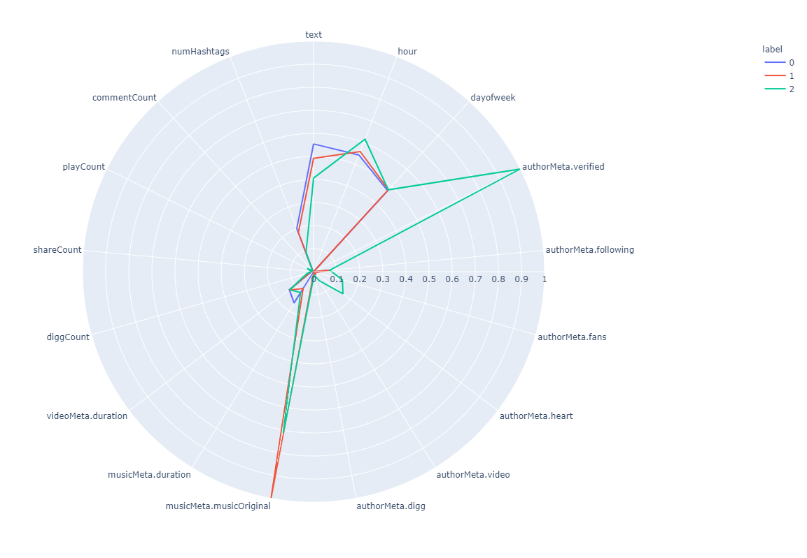

Predicting the Next TikTok Trend
Shrey Amin, Samuel Garvis, Abhinav Joshi, Dimitrios Kosmakos, Zoe
Maisel
Introduction/Background
TikTok is currently rewriting the world. An innovative social media
application that has captivated everyone, TikTok posts a staggering
monthly user count of over 1 billion users. The app fields a powerful
algorithm that adapts to users' preferences and delivers personalized
content in the form of a "For You" page. Among the millions of videos
that flood a user's For You page, many center around notable trends
that build in momentum often to the point of virality.
Problem Definition
On any given day, thousands of videos go viral, reaching millions of
views. Many features contribute to the popularity of a video,
including the sound used and hashtags that accompany a video. We will
use a two-pronged approach to address the overarching issue of
identifying what makes a TikTok video popular: using existing trending
videos to identify relationships through clustering approaches
(unsupervised learning) and using video metadata to provide a future
indication of video popularity by aiming to predict a video’s play
count based on a variety of features (supervised learning).
Data Collection
Our primary methods of data collection came in the form of open-source scrapers that pulled video metadata from
the TikTok API and returned results in an easily consumable csv format. First, to get existing trending videos
for our unsupervised task, we leveraged Tiktok-Scraper to generate a list of 18000 popular
videos, fitted with numerous features of metadata including commentCount, shareCount, and boolean features to
decipher whether or not the sounds used in the video were original or not. This dataset was a sufficient sample
for us to gain insights using clustering approaches as to what features were prominent among the popular videos,
and what groups could be created from the dataset. Furthermore, in order to balance the dataset for the
supervised learning aspect of our project, we needed to find TikTok videos that were not as popular as the ones
in the first scraper used. For this task, we utilized the TikTok-Api scraper to get a list of 13000 unpopular
videos fitted with the same metadata as the popular ones. Once this data was stored in easily consumable CSV
formats, we were able to clean and preprocess the data using the methods discussed in the subsequent section.
Data Cleaning
Our data cleaning process was divided into three major parts, namely: dropping unnecessary columns, and
converting column data types, and lastly, handling the format of the hashtags in an analyzable way.
Dropping Columns
Various columns that were in the original dataset received from the scraper related to the names of entities
that were unnecessary, such as the author, music, and the video itself. These IDs were mainly used to identify
TikTok video metadata within the TikTok API, but for the purposes of our data analysis, proved to be irrelevant.
As such, we manually removed these unnecessary columns, denoted by the list:
Converting Existing Columns
Several columns in the original dataset contained unique formats that were in complex formats that did not
lend well for our analysis. For instance, one of the columns in the dataset was the create time (in seconds) of
the TikTok. Consequently, we decided to split the create time into the hour of day and the day of the week to
gain further granularity for understanding the impact of time on the popularity of the TikTok.
Moreover, two of the columns (musicMeta.musicOriginal and authorMeta.verified) were originally encoded as
true/false values. We converted them to 0’s (false) and 1’s (true) to better fit the Pandas Dataframe we used to
house our data, rather than the string representation these boolean values were originally in.
Finally, we replaced the description of the TikTok with the length of the description. Given that the
description was likely to be vastly different across videos, the length of the description served as a better
metric for gauging the impact of the caption on the popularity of the TikTok.
Formatting Hashtags
Our last column in the original dataset contained an array of strings that represented the hashtags used for
each video. Because the set of hashtags was extremely large and often several hashtags were not commonly used,
we chose to only keep the top N hashtags to get rid of any unnecessary features and to simplify our dataset.
When these top N hashtags were filtered out, we then applied one hot encoding in order to make each of these
hashtags their own columns represented by 1’s and 0’s.
The final list of columns in our dataset can be seen here:
Supervised Data Balancing
For the supervised learning part of our assignment, it was crucial to have a balanced dataset consisting of
both popular and unpopular videos. As such, we combined the popular and unpopular dataset into a single csv
file. Additionally, we added a new column called ‘popular’ to the combined dataset which was created by setting
a threshold of at least 500,000 views.
Methods
Unsupervised
For our unsupervised learning approach, we chose to use K-means
clustering in order to make sense of the various clusters that might
exist among the videos that were able to go viral. We first plotted a
chart iterating from 1 to 11 clusters and seeing the inertia change
with the number of clusters chosen. Drawing from the elbow method, we
deemed the optimal number of clusters to be 3, and were able to
visualize the clusters accordingly. Deviating slightly from a
traditional clustering visualization, we opted for a line plot from
Plotly graphed in a circular frame, where the features were bordered
around the outside of the circle. This line plot allowed us to see
what features corresponded most highly with the clusters that were
formed, giving us insights into what types of groups the clusters
might be.
We also mirrored this K-means clustering approach among the top N hashtags that were kept in the data cleaning
phase. Using these N hashtags, we applied the same process as before, finding the optimal number of clusters (3)
using the elbow method, and producing the same visualization.
Lastly, we used PCA to gauge the importance of the features and to pick out the most prevalent ones. From the
visualization below, we need a high number of components in order to explain ~95% of the variance. Evidently,
there is not a notable component, or projection of our feature space that maximizes our variance, and as such,
we cannot reduce our feature set effectively.
The visualization of PCA is shown below:
Supervised
For the supervised learning aspect of the project, we took a three pronged approach toward analyzing the
problem of predicting whether a TikTok video was popular or not. First, we used various methods to initially
make sense of our dataset and see how our dataset was made up. Specifically, we used describe() to see how our
data is distributed and how much outliers affect the data. With this, we were able to determine that playCount
had a much higher mean than median, indicating the presence of significant outliers although these data values
were deemed to be useful in our dataset to account for all types of videos. Next, we found the features with the
highest correlation to the ‘popular’ column that we added into the dataset. There were 11 features with an
absolute correlation higher than 10%, so these features were plotted in a scatter matrix to see their
intra-correlations. These correlations can also be seen in a Heat Map format as shown below:
Secondly, we applied lasso regression 3 times with a different target set each time in order to reduce our
feature set to the most relevant features. For each target set, we plotted the features that lasso chose to use,
allowing us to gain more insight into which features were least and most important to predict the target set.
The visualization for the Lasso Model is shown below:
From this visualization of the Lasso Model, we can see that the most prominent features with respect to the
playCount certainly include the diggCount (like count of a video) as well as the authorMeta.fans, and the number
of shares that a video has.
After further understanding the features we are working with, we chose a large amount
of popular regression models and decided to test all of them to find which model best
predicts our data. We chose these models because we have a target set which is play
count, and as play count is a quantity and not a label, we want to use a regression
model. The models that we tried were LinearRegression, Lasso, Ridge, ElasticNet,
KNeighborsRegressor, SGDRegressor, and DecisionTreeRegressor. We put each model
into a pipeline that first used a standard scalar on the data so that no feature would be
more or less represented.
Then, we used Recursive Feature Elimination to remove the least important features
from our dataset. RFE recursively fits the given model on a smaller dataset, and each
time, it will rank the importance of the features and remove the least important features.
We also tried another feature selection method called SelectKBest (SKB) which selects
the top k features with the highest F-values. Then, for each model, we tested a different
amount of features using both RFE and SKB.
The metrics that we used to find the best models were mean squared error (MSE) and r
squared. Given that we are seeking a model that can explain both the accuracy and variance of our
data, we felt that these primary metrics were the best indicators for model success.
Results
Unsupervised
K-Means Clustering
The visualizations produced from the clustering on the popular video
feature set and only the hashtag set are shown below.

From the first visualization on the popular video metadata feature
set, we can see that three primary groups emerge. Perhaps most
notable is group 1, which can be thought of as casual users who used
an original sound on a video, and this sound was highly received
among the TikTok community. As shown on the visualization, the red
line denoting group 1 tends highly toward the
musicMeta.musicOriginal feature, which means that these videos have
an original sound. Given the nature of TikTok and the ability to
duet a video and use the previous video’s sound, this provides a
macroscopic explanation for this result. With group 2, we see high
tendencies toward the authorMeta.Verified column and the
authorMeta.heart column. This can be explained by TikTok influencers
and those who already have a fanbase, and due to their “verified”
status, would be significantly more likely to put out a popular
video. With the last group, group 0, we did not notice any notable
features that gave us insight into what types of users/videos these
might be. As with many social media platforms, we think these videos
may have just gotten lucky.
Looking at the same visualization with the hashtags, we see that the
majority of people, denoted by group 0, do not use many hashtags
(given that the blue line plot does not tend highly toward any of
the hashtags). From those that do, in groups 1 and 2, we can see
that the overwhelming majority use some variation of the hashtag
“for you,” which corresponds to the name of the general page of
videos that TikTok users have.
DBSCAN for Verified vs. Unverified Creators
Beyond general clustering results, we wanted to delve deeper into the relationship between popular videos and
creators' verification status.
To do so, we used DBSCAN on a focused feature set (authorMeta.verified, playCount) in order to group our data
into verified users and unverified users.
Our DBSCAN clustering produced two clusters as expected, with a silhouette score of ~0.975, indicating strong
relationships intra-clusters and distinctness between separate clusters.
From these results, we were able to observe that unverified creators accounted for ~79% of popular videos. The
visualization of the clustering is shown below:
Supervised:
After testing all of the models, we got a clear picture of what model to select. This graph
shows the r squared for each model with a different number of features and feature
selection methods:
Based on this visualization, we can broadly see that SKB to choose features generally performs better than using RFE.
In addition, SGD and Ridge seem to predict the data the best given their large r squared values. To get more insight
into the different models, we can look at our table:
This table just shows the top 15 results by filtering on the Test MSEs that are closest to
0. When we filtered based on the largest r squared values, the top result was exactly the
same: SGD. Due to this combination of the SGD model having MSE closest to 0 (-5.56e12) and the
highest r squared (0.828), we settled on SGD as the final model to predict play count.
After tuning the hyperparameters for SGD with 30 features chosen using RFE, we can see
the model's predicted play count vs the true values:
Discussion
From the analyses we performed, we were able to identify some key results:
- Among popular videos, there are three major clusters of videos:
Popular Influencers
Original Creators
Lucky Video
- Analyzing just unverified vs. verified creators within popular videos, we found that most users (~79%) were
in fact unverified, indicating that video popularity is independent of creator influence/existing popularity.
- No notable groups among popular videos’ hashtag sets, although the main hashtags used were variants of
#foryoupage.
- Although we are confident about our preprocessing decisions, in our treatment of the hashtags, we may have
some limitations. Specifically, by replacing the hashtags with their count, we
could potentially lose out on the semantic meaning of each hashtag. While there may have been analyses we
could have drawn in this space, we chose to simplify the complexity of the data by replacing
the text with numerical counts. Moreover, by imposing an arbitrary frequency count by which a hashtag was
deemed "important," we may have missed out on some insights that could have been drawn from the
full hashtag set.
-
Using the 30 features ['id', 'text', 'hour', 'dayofweek', 'authorMeta.id', 'authorMeta.verified',
'authorMeta.following', 'authorMeta.fans', 'authorMeta.heart', 'authorMeta.video',
'authorMeta.digg', 'musicMeta.musicId', 'musicMeta.duration', 'videoMeta.duration',
'diggCount', 'shareCount', 'commentCount', 'numHashtags', 'popular', 'fyp', 'foryou',
'foryoupage', 'viral','fypシ', 'funny', 'xyzbca', 'comedy', 'duet', 'fy', 'parati'], we have a
model that can roughly explain 83% of the variance of how many plays a TikTok video
will receive.
-
diggCount has an 87% correlation to play count
-
MSE increases considerably in the presence of outliers. Our model predicts
some outliers well, but it also under predicts playCount for some videos that have extremely large
playCounts. This is what causes our MSE to become very large.
-
If a video is predicted to get a lot of plays, then this video likely has similar feature values
to previous videos that got a lot of plays.
Conclusions
Overall, we set out to identify relationships between popular videos through clustering approaches, as well as
use video metadata to provide a future
indication of video popularity. As it pertains to this problem defintion, our results indicate many new insights
about the TikTok space.
From our unsupervised analysis, we were able to learn that perhaps the most notable way for unverified creators
to put out a viral video is
to create their own unique sound/music. This sound can circulate among the TikTok community in the form of
duets/stitches that can further increase
the popularity of the unverified creator's video. Lastly, most significantly, we found that the
concentration of popular videos was heavily skewed toward unverified creators.
Unlike other social media platforms, TikTok truly does give lower-influence users a chance at becoming viral, as
over 79% of popular videos were from users who were not verified.
From our supervised analysis, we found that about 30 features were prominent in those videos that were able to become
viral when compared to videos that were not popular. Based on this knowledge, we can draw insights into how to best build
a popular TikTok. By emulating the features shown in the popular set, users will have a greater likelihood of reaching virality.
As avid TikTok users, our group did not initially realize the number of factors that contribute to a video's popularity. Beyond
just picking a sound, factors like duration, day of the week, and hashtags chosen can significantly sway a video's outlook. Because
TikTok is a platform where popularity seems to compound, putting oneself in a feature set closest to popular videos' features can be
a user's best shot to fame.
References
[1] Fabien Lauer, Gérard Bloch. Incorporating Prior Knowledge in
Support Vector Machines for Classification: a Review. Neurocomputing,
Elsevier, 2008, 71 (7-9), pp.1578-1594.
ff10.1016/j.neucom.2007.04.010ff. ffhal-00021555v2f
[2] Loukas, S. (2020, July 28). PCA clearly explained - how, when, why
to use it and feature importance: A guide in Python. Retrieved March
01, 2021, from
https://towardsdatascience.com/pca-clearly-explained-how-when-why-to-use-it-and-feature-importance-a-guide-in-python-7c274582c37e
[3] Verma, R. (2009). Strengths and weaknesses. Retrieved March 01,
2021, from
http://www.hypertextbookshop.com/dataminingbook/public_version/contents/chapters/chapter004/section004/blue/page003.html
[4] Soni, A. (2020, July 03). Advantages and disadvantages of knn.
Retrieved March 01, 2021, from
https://medium.com/@anuuz.soni/advantages-and-disadvantages-of-knn-ee06599b9336